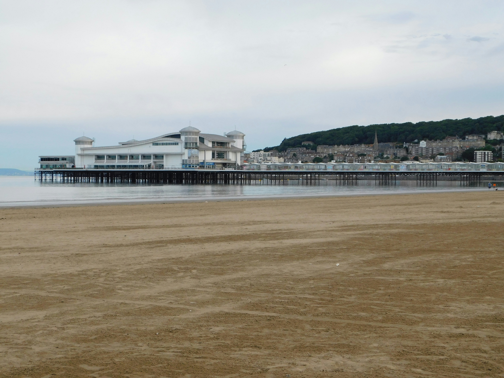

Nature Escapes
Explore our local history museum, set out on chartered fishing tours, snorkel vibrant reefs, and zip-line through lush rainforest canopies. Enjoy island nightlife with
visits to popular pubs and a local microbrewery, dance the night away at our new club, catch the latest films at the theater, or take in breathtaking views on a helicopter
ride. For family fun, stop by the arcade, browse local art galleries, or go bowling!
From fresh-caught seafood and authentic Caribbean cuisine to gourmet international fare, the island’s diverse restaurants offer something for every palate. Whether
you're craving beachside bites or elegant dining under the stars, you'll find unforgettable flavors at every turn!
Beautiful Beaches!
Kaelua Shore

Formed from ancient volcanic lava flows, Kaelua Shore is a striking black sand beach that offers a dramatic contrast to Taniti’s lush greenery and turquoise waters.
It’s a serene, photogenic spot perfect for sunbathing, beachcombing, or simply soaking in the island’s natural beauty.
(123) 456-7890

Russakov, S. (2019). seashore-during-daytime-XU_MYbgspMI. https://unsplash.com/photos/seashore-during-daytime-XU_MYbgspMI. Retrieved June 19, 2025, from https://unsplash.com/photos/seashore-during-daytime-XU_MYbgspMI.
Prismo Beach
With its soft golden sands and gentle waves, Prismo Beach is a classic island escape ideal for swimming, sunbathing, and laid-back beach days.
Whether you're lounging under an umbrella or strolling the shoreline, it's pure tropical simplicity at its best.
(123) 456-7890

Oulashin, S. (2017). seashore-during-golden-hour-KMn4VEeEPR8. https://unsplash.com/photos/seashore-during-golden-hour-KMn4VEeEPR8. Retrieved June 19, 2025, from https://unsplash.com/photos/seashore-during-golden-hour-KMn4VEeEPR8.
Yellow Leaf Bay
Buzzing with energy and island charm, Yellow-Leaf Bay is a vibrant beach destination where adventure meets relaxation. With easy access to snorkeling,
paddleboarding, and nearby local shops and vendors, it’s the perfect spot to dive into both Taniti’s waters and its culture.
(123) 456-7890

Payne, N. (2022). a-beach-with-a-pier-and-buildings-in-the-background-x4ZPLHLJelY. https://unsplash.com/photos/a-beach-with-a-pier-and-buildings-in-the-background-x4ZPLHLJelY. Retrieved June 19, 2025, from https://unsplash.com/photos/a-beach-with-a-pier-and-buildings-in-the-background-x4ZPLHLJelY.
Active Volcano!
Mount Tūmoko

Rising from the heart of the island, Mount Tūmoko is Taniti’s small but active volcano, offering both awe and adventure. Hike its scenic trails or take in its
smoldering beauty from a safe distance—this natural wonder is a must-see for thrill-seekers and nature lovers alike.
(123) 456-7890

Grypachevska, T. (2021). brown-and-black-mountain-under-white-clouds-80x3QULJDN4. https://unsplash.com/photos/brown-and-black-mountain-under-white-clouds-80x3QULJDN4. Retrieved June 19, 2025, from https://unsplash.com/photos/brown-and-black-mountain-under-white-clouds-80x3QULJDN4.
Lush Rainforests!
Ravakiri Falls
Tucked deep within Taniti’s lush jungle, Ravakiri Falls is a breathtaking cascade surrounded by vibrant greenery and serene trails.
Whether you're hiking in for a photo op or enjoying the misty cool air, it's a peaceful retreat into the island’s wild, untouched beauty.
(123) 456-7890

Kyle. (2020). water-falls-in-the-middle-of-green-plants-ooNuyiU4d3w. https://unsplash.com/photos/water-falls-in-the-middle-of-green-plants-ooNuyiU4d3w. Subtle Cinematics. Retrieved June 19, 2025, from https://unsplash.com/photos/water-falls-in-the-middle-of-green-plants-ooNuyiU4d3w.
Te Maori Canopy
Perched high among the treetops, Te Moari Canopy offers stunning elevated views of Taniti’s rainforest, just steps from the luxurious Te Moari Retreat.
Stroll along shaded walkways, listen to birdsong, and experience the jungle from a whole new perspective—peaceful, panoramic, and unforgettable.
(123) 456-7890

M, P. (2023). a-couple-of-people-walking-down-a-wooden-walkway-er_0mXWhvcw. https://unsplash.com/photos/a-couple-of-people-walking-down-a-wooden-walkway-er_0mXWhvcw. Retrieved June 19, 2025, from https://unsplash.com/photos/a-couple-of-people-walking-down-a-wooden-walkway-er_0mXWhvcw.
Vale Oko
A secluded gem deep within Taniti’s rainforest, Vale Oko is a hidden valley where dense jungle opens into a quiet, untouched sanctuary.
Ideal for hikers and explorers, it’s a place where nature feels raw, serene, and completely magical.
(123) 456-7890

Petrus, E. (2021). a-river-running-through-a-lush-green-forest-oiuwDCeqyc4. https://unsplash.com/photos/a-river-running-through-a-lush-green-forest-oiuwDCeqyc4. Retrieved June 19, 2025, from https://unsplash.com/photos/a-river-running-through-a-lush-green-forest-oiuwDCeqyc4.
Shuliahin, N. (2018). map-illustration-rkFIIE9PxH0. https://unsplash.com/photos/map-illustration-rkFIIE9PxH0. Retrieved June 16, 2025, from https://unsplash.com/photos/map-illustration-rkFIIE9PxH0.